Game Barrier
Wat is Game Barrier?
Bekijk onze socials!Game Barrier is een internationaal team van actieve game developers dat ik in 2020 oprichtte. De naam "Game Barrier" staat symbool voor een grens tegen de game-industrie die vaak niet gebruiker- of mensgericht is. Ons doel is om games te maken die draaien om fun, creativiteit en samenwerking — niet om winst.
Wat is Intoxicated Driver?

Intoxicated Driver is het spel waar ik de meeste invloed op heb gehad.
Het is een simpele party game met als thema “dronken rijden” en heeft een “mostly positive” rating op Steam.
Ik werkte aan het programmeren en de gameplay, terwijl een teamlid uit Amerika zich richtte op marketing en leveldesign.
Het spel is gratis en heeft meer dan een half miljoen spelers bereikt!
We publiceerden het volledig zelfstandig en bouwden een actieve community rond het project.
De in-game aankopen (cosmetische items) brachten ongeveer $14.000 op. Het project werd in zes maanden ontwikkeld als zijproject naast mijn schoolwerk.
Populariteit
SMii7Y - 2.5M Views - Een van de populairste gamingkanalen!
Blarg - 300K Views - Een populair gamingkanaal!
Ook is de game gespeeld door streamers zoals CallMeCarson (1.1M volgers) en vele anderen.
Waar werken we nu aan?
Nu werk individueel aan games voor Game Barrier, Ik bevoorbeeld werk aan Scorched.
Scorched
Scorched is een first-person sandbox shooter, gemaakt voor unieke ervaringen elke keer dat je speelt.
De uniekheid komt uit de variatie in gamemodes en personalisatie waarbij elke speler verschillende "modifiers" heeft, en "injections" die je voordelen geven zoals "Low-gravity", "Jezelf laat lanceren met explosies", ..., Ook kan je je wapens kiezen en volledig aanpassen met verschillende attachements.
Het is nog early, maar elke asset (models, animaties, geluid, ...) en code is volledig door mezelf gemaakt, en werkt in multiplayer met een eigen ontwikkelde anticheat en proffesionele structuur.
Hieronder wat early fotos van teasers, nieuwe en meer zijn beschikbaar in deze discord server:
Bekijk de Scorched teasers!Gameplay
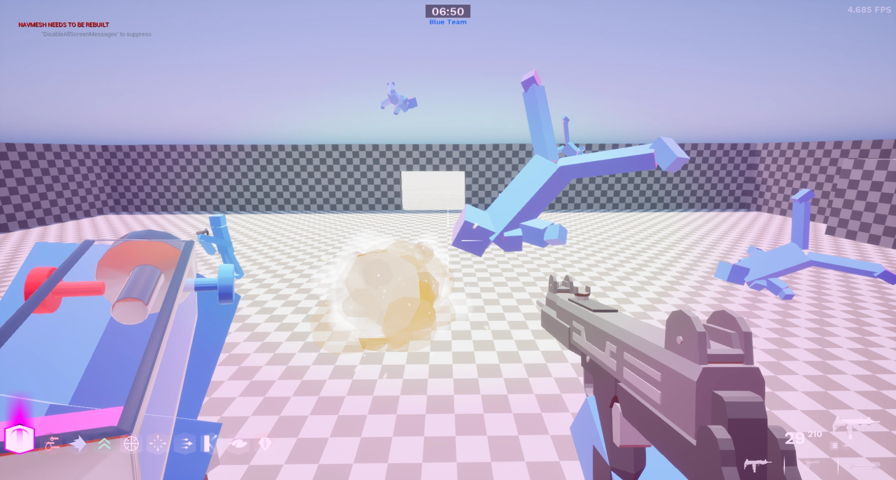 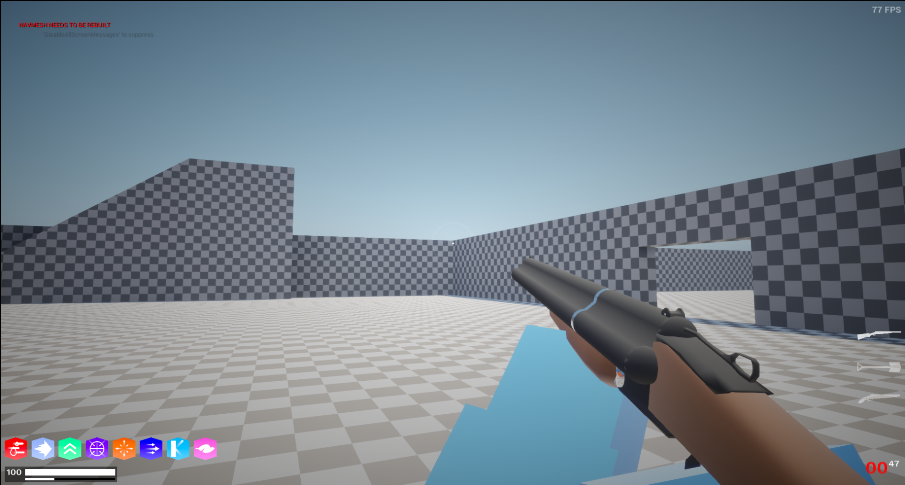 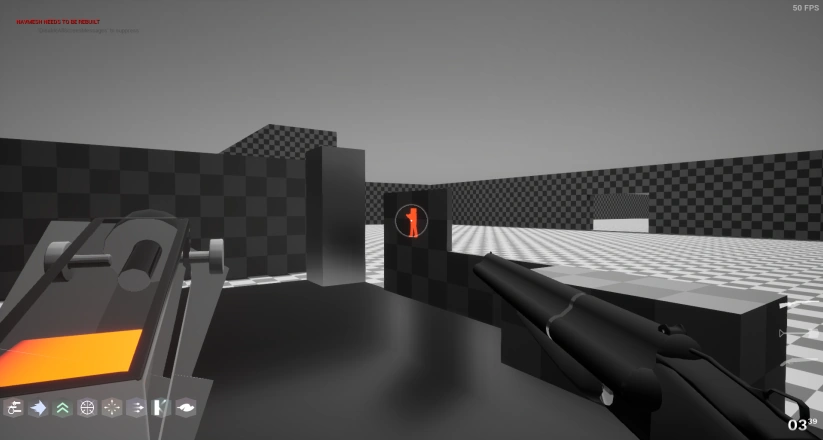 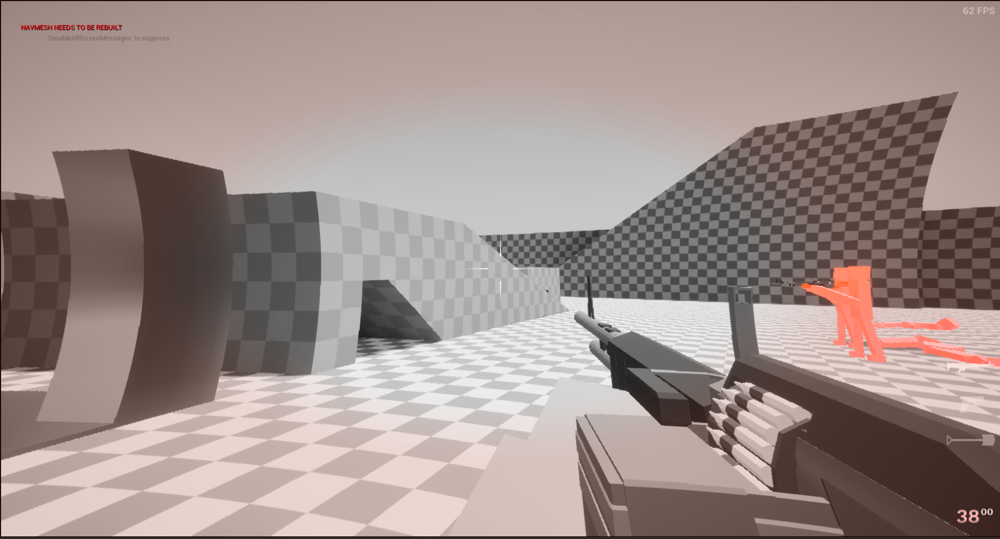 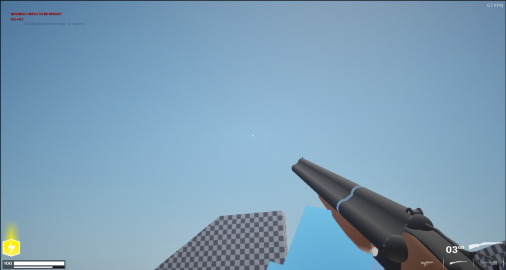 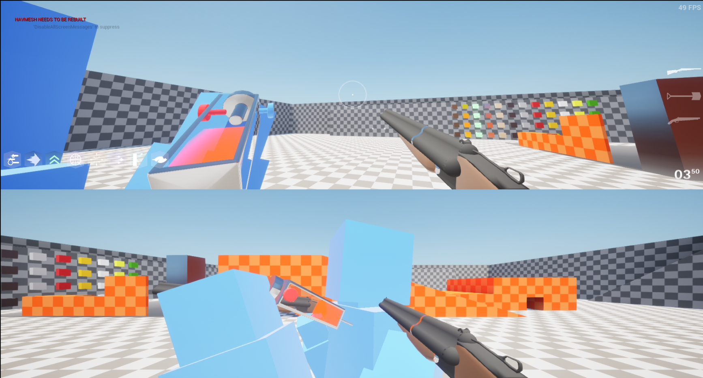 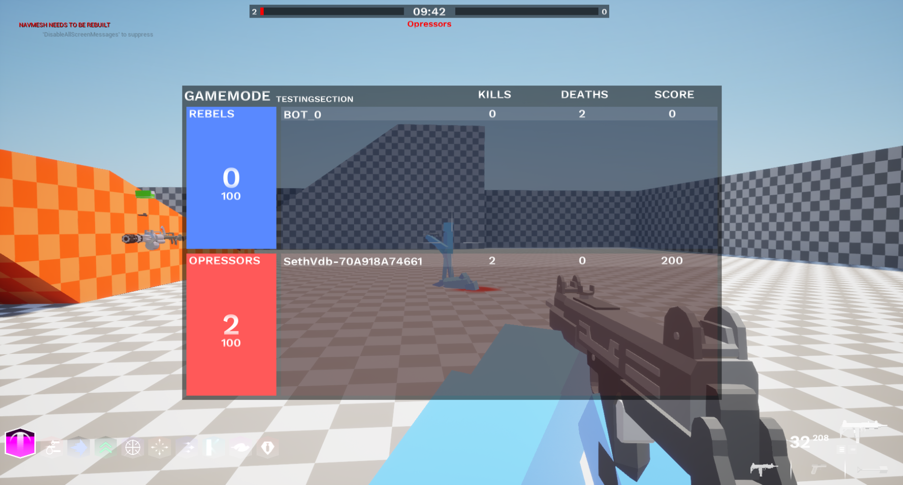Model showcase
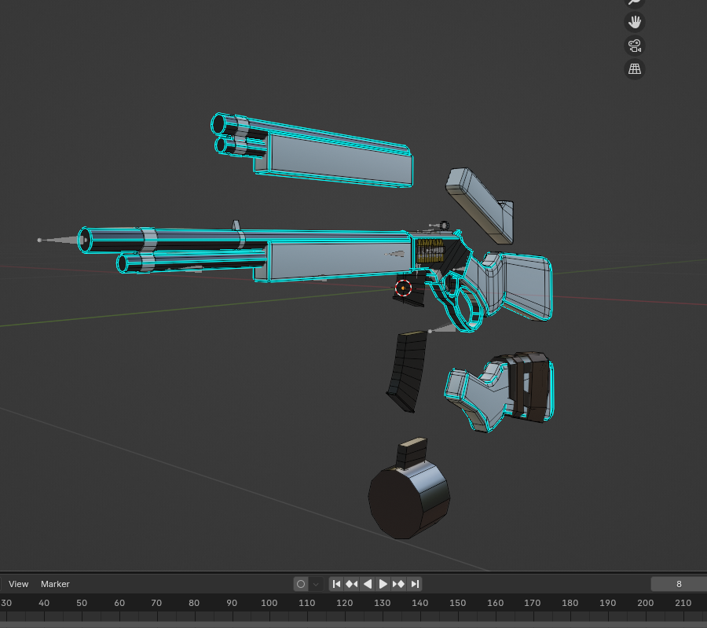 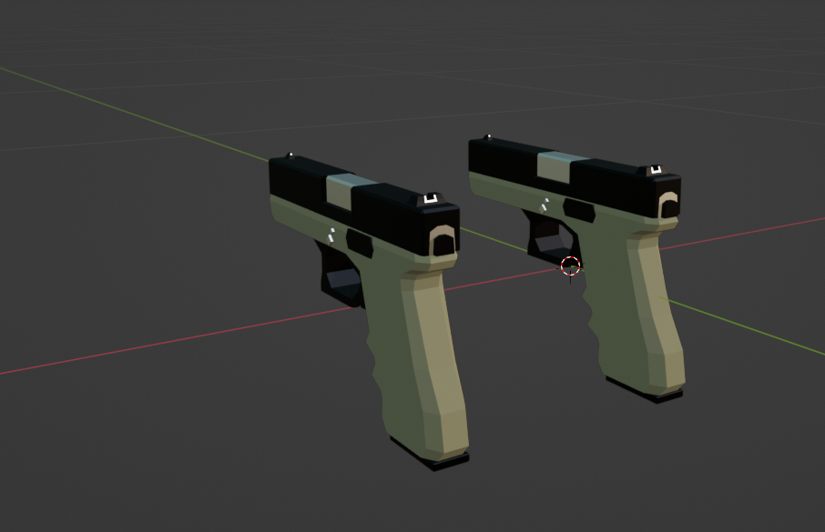 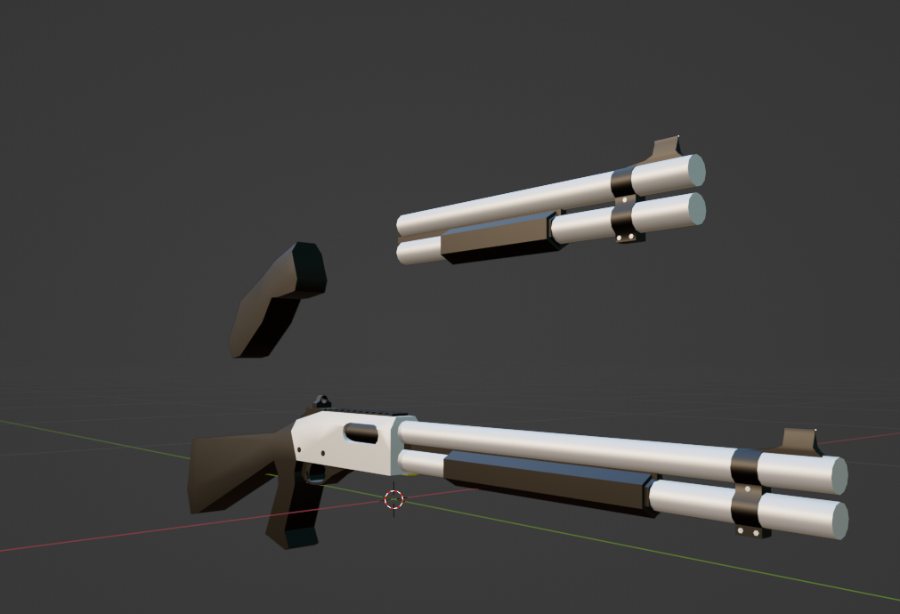 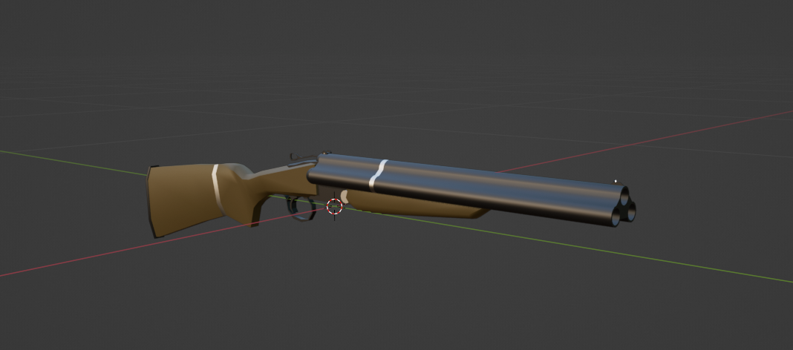 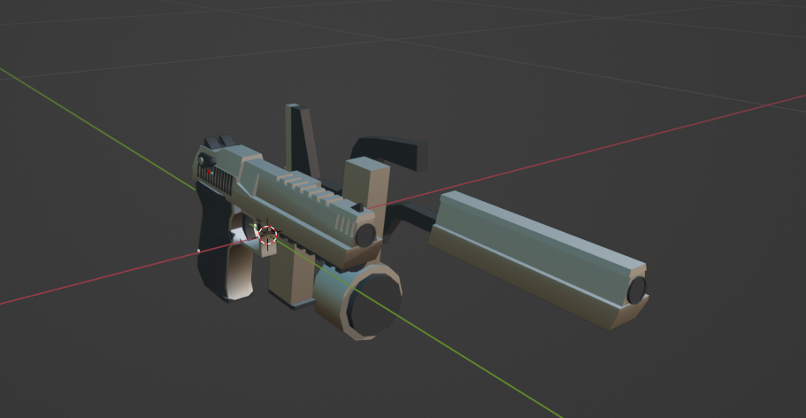 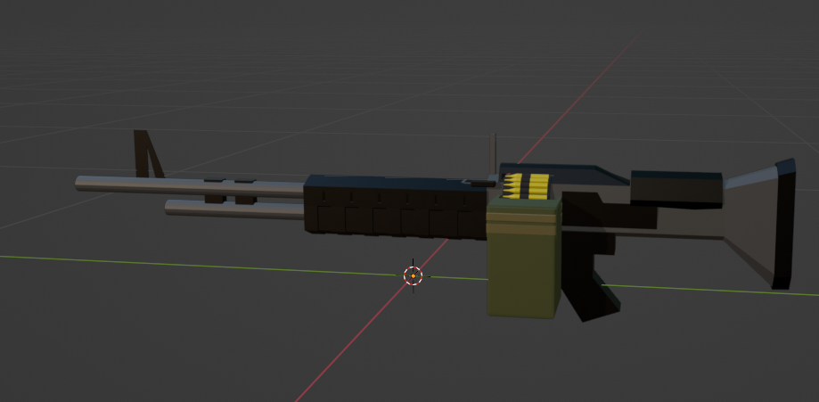System showcase
Weapon showcase
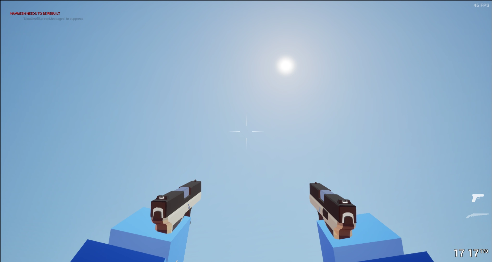 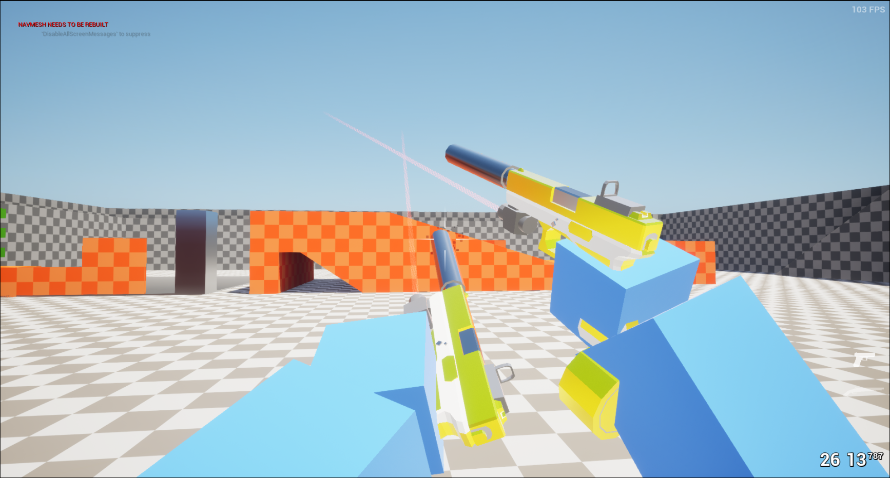 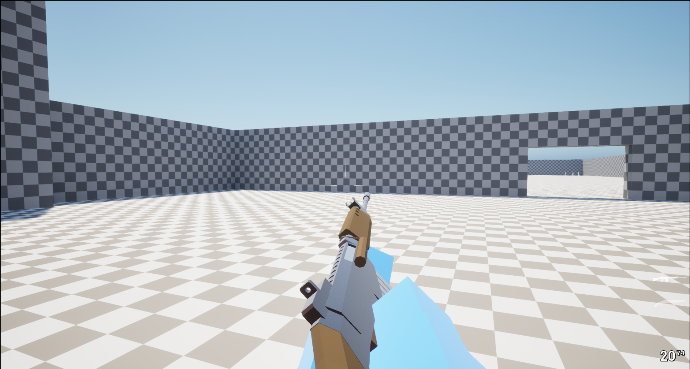
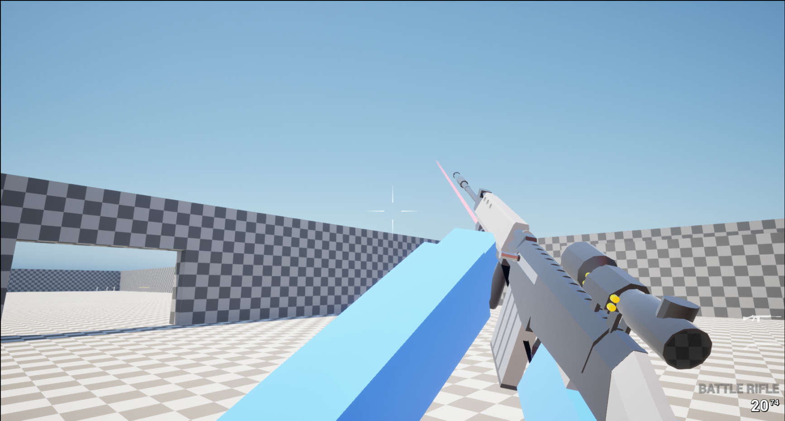
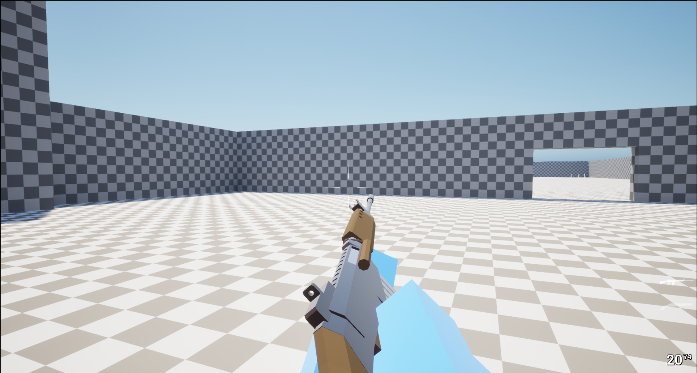
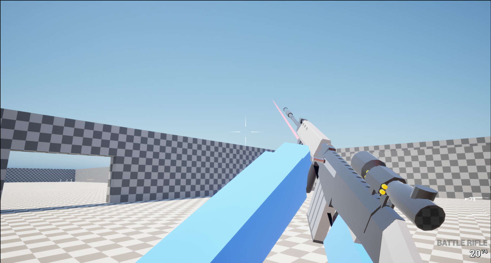